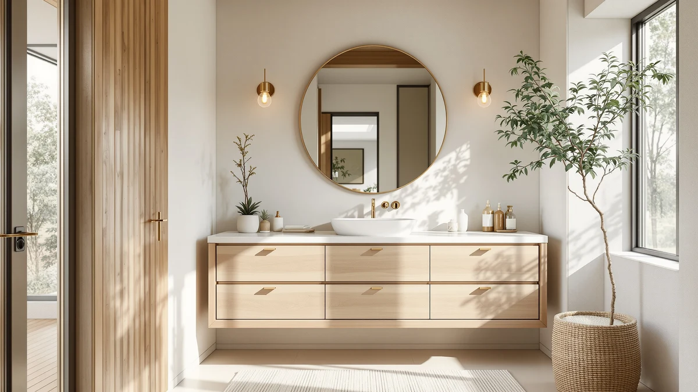

Quick Answer
After comparing seven of the best rustic vanity tops on price, size, material, and verified owner ratings, the AMERLIFE 36" Farmhouse Bathroom Vanity is the best all-around pick. It pairs a whitewashed rustic finish with soft-close doors at $319.99, and its 4.3-star average across 44 reviews is the strongest verified rating in this comparison.
Our pick: AMERLIFE 36" Farmhouse Bathroom Vanity, $319.99 Check Price on Amazon
Bottom line: our top pick is the AMERLIFE 36" Farmhouse Bathroom Vanity with Sink Combo at $319.99. The best budget option is the AMERLIFE 24'' Farmhouse Bathroom Vanity with Sink at $219.99.
Things to Know Before You Buy
- Material matters more than the finish photo. Every rustic vanity top in this roundup uses an MDF or engineered wood cabinet base, so the "rustic" look comes from the surface finish, not the underlying material. Wipe up standing water quickly regardless of the model you choose.
- Size ranges from 24 to 48 inches. A 24-inch or 28-inch vanity suits a half-bath or powder room, while 36-inch and 48-inch models give you more counter and storage space in a primary bathroom.
- Farmhouse style comes in a few finishes. Whitewashed, natural wood-grain, and barn-door cabinet fronts all read as rustic, so decide which finish matches your bathroom's existing trim and flooring before you buy.
- Verified ratings are limited. Only the AMERLIFE 36" model in this comparison carries a published rating and review count. For the rest, we relied on listed specs, pricing, and material descriptions rather than a star average.
- Check the sink configuration. The 48-inch SOLIDEE vanity ships with a dual-sink layout, while the smaller models are single-sink, which changes how much counter space you actually get per user.
The best rustic vanity tops solve a specific problem: you want the warm, worn-in look of a farmhouse bathroom without gutting the whole room to get it. A rustic vanity top does most of that work on its own, since the finish sets the tone for everything else in the space, from the mirror frame to the hardware you pick.
We compared seven vanities across price, size, material, and verified owner reviews to find which ones actually deliver that look at a fair price. Our pick, the AMERLIFE 36" Farmhouse Bathroom Vanity, combines a whitewashed rustic finish with soft-close doors and the only verified rating in this group, a 4.3-star average across 44 reviews, at $319.99.
Not every bathroom needs a 36-inch vanity, though. If you're outfitting a small powder room, the AMERLIFE 24" model gets you the same farmhouse finish for $219.99, and if you need a wider, dual-sink layout, the SOLIDEE 48-inch vanity has the counter space for it. We break down all seven below, with honest tradeoffs for each.
Why You Should Trust Us
Ilane Tall, home and bath expert at Best Bathroom Vanities, wrote this review. We are a research-based review site: we do not run a fake testing lab, and we do not claim to have physically installed or used the vanities we cover. Instead, we compare manufacturer specs, current Amazon pricing, materials, and verified buyer reviews to help you find the best rustic vanity tops for your bathroom and budget. Every product listed here links to its real Amazon listing, and every price and rating shown reflects the data available at the time of publishing.
How We Picked
To find the best rustic vanity tops, we started by pulling every rustic-style vanity in our product database that matched a farmhouse, natural wood, or whitewashed finish, then narrowed the list to models with clear published dimensions, materials, and pricing. We excluded listings with vague descriptions, missing sink specs, or no verifiable brand name behind them.
From there we ranked the remaining candidates on four factors: price per inch of counter space, cabinet material and finish quality as described by the manufacturer, sink configuration, and verified review data where it existed. We also made sure the final list covered a range of sizes, from 24-inch powder-room vanities to 48-inch primary-bathroom models, so this guide works whether you're furnishing a half-bath or a full master bath.
How We Compared
We do not physically test bathroom vanities. Instead, we lay every model's specs side by side and compare them on the same terms: listed dimensions, cabinet material, sink count, finish description, current Amazon price, and, where available, the aggregate star rating and review count reported by the manufacturer or retailer.
When two rustic vanity tops looked similar on paper, we compared their price per inch of width and checked how each brand described its finish and hardware to spot meaningful differences in build quality claims. We also cross-checked pricing against each listing's price-valid window to keep the numbers in this guide current as of publishing.
Our Picks

AMERLIFE 36" Farmhouse Bathroom Vanity
What we like
- Strongest verified rating in this comparison, 4.3 out of 5 across 44 reviews
- Whitewashed rustic finish that reads as farmhouse without looking dated
- Soft-close doors and drawers included at this price point
- 36-inch width fits most standard bathroom footprints
Flaws but not dealbreakers
- Single sink only, so it is not built for shared primary bathrooms
- Engineered wood construction, not solid hardwood, so avoid letting water sit on the top
| Material | MDF / engineered wood |
| Size | 36 inch |
The AMERLIFE 36" Farmhouse Bathroom Vanity earns the top spot in this guide because it backs up its rustic vanity top look with the only verified owner data in the group. A 4.3-star average across 44 reviews at $319.99 tells you this is a vanity that has actually shipped to enough buyers to build a track record, unlike a listing with only promising photos.
The whitewashed finish and visible wood grain give it the worn-in farmhouse character that defines a good rustic vanity top, and the soft-close hardware is a detail you would expect on a pricier model. Like every vanity here, the cabinet body is MDF and engineered wood rather than solid hardwood, so we would not recommend leaving standing water on the counter for long periods. For a single-sink primary or guest bathroom, it is the easiest recommendation in this comparison.

SOLIDEE 48 inch Natural Color
What we like
- 48-inch width with a dual-sink layout, the widest counter in this comparison
- Natural wood-tone finish that skews closer to real wood grain than painted farmhouse styles
- Extra counter space works well for two people getting ready at once
Flaws but not dealbreakers
- Highest price in this roundup at $499.90
- No published star rating or review count, so you are relying on the listing description alone
- Its larger footprint needs a bathroom wide enough to fit it comfortably
| Material | MDF / engineered wood |
| Size | 48" |
The SOLIDEE 48 inch Natural Color vanity is the pick for anyone who has outgrown a single-sink setup. At 48 inches wide with two sink basins, it gives two people real counter space at the same time, something none of the smaller rustic vanity tops in this guide can offer.
Its natural wood-tone finish leans closer to an actual wood-grain look than the whitewashed farmhouse style of the AMERLIFE picks, which makes it a better match for a warmer, more traditional rustic bathroom. The tradeoff is price: at $499.90 it costs more than any other vanity here, and unlike our top pick, it does not come with a published rating or review count to verify buyer satisfaction. If your bathroom has the width for it, though, it is the strongest dual-sink option in this comparison.

DELUXE LIVING 30 Inch Bathroom
What we like
- 30-inch size fits guest bathrooms and smaller primary bathrooms alike
- Priced under $270, one of the more affordable rustic vanity tops in this guide
- DELUXE LIVING's rustic finish matches the farmhouse look of the pricier picks
Flaws but not dealbreakers
- No published rating or review count to confirm long-term durability
- 30 inches of counter space is tight if you store a lot of bathroom essentials
| Material | MDF / engineered wood |
| Size | 30 Inch |
The DELUXE LIVING 30 Inch Bathroom vanity sits in the middle of this lineup on both size and price, which makes it a practical choice if you want a rustic vanity top without committing to the widest or narrowest option available. At $269.99, it undercuts our top pick while still delivering the same MDF and engineered wood construction and a comparable farmhouse finish.
Thirty inches is enough counter space for daily essentials without overwhelming a smaller bathroom, which is why we recommend it for guest bathrooms or secondary bathrooms where a 36-inch or 48-inch model would feel oversized. The listing does not include a published star rating, so treat the price and material specs as your main basis for comparison here rather than a proven review history.

AMERLIFE 48" Farmhouse Freestanding Bathroom
What we like
- Freestanding, open-shelf base gives you visible storage for towels and baskets
- 48-inch width, $50 cheaper than the enclosed SOLIDEE dual-sink model
- Weathered wood-tone finish leans into the farmhouse aesthetic
Flaws but not dealbreakers
- Open shelving means less concealed storage than a cabinet-front vanity
- No published rating or review count available on this listing
| Material | MDF / engineered wood |
| Size | 48" |
The AMERLIFE 48" Farmhouse Freestanding Bathroom vanity takes a different approach to a large rustic vanity top. Instead of an enclosed cabinet, it uses an open-shelf base, which trades concealed storage for the kind of visible, styled storage you see in farmhouse interior photos: rolled towels, woven baskets, and stacked bins sitting in plain view.
At $449.99 it costs less than the enclosed 48-inch SOLIDEE model, which makes it the relatively lower-cost way to get that much counter width in this comparison, even if it is not the cheapest vanity overall. If you like the idea of open shelving and do not need doors to hide clutter, this is the pick that gives you the most counter space for the money among the wider options here.

AMERLIFE 24'' Farmhouse Bathroom Vanity
What we like
- Lowest price in this comparison at $219.99
- 24-inch footprint fits tight half-baths where larger vanities will not
- Same farmhouse finish family as AMERLIFE's larger 36-inch model
Flaws but not dealbreakers
- 24 inches of counter space limits storage under and around the sink
- No published rating or review count on this listing
| Material | MDF / engineered wood |
| Size | 24" |
The AMERLIFE 24'' Farmhouse Bathroom Vanity is the entry point into this brand's rustic lineup, and at $219.99 it is the least expensive vanity in this guide. If your bathroom is small enough that a 30-inch or 36-inch vanity would not fit comfortably, this is the size to look at first.
It shares the same general farmhouse design language as the brand's larger 36-inch model, so if you are outfitting a primary bathroom and a half-bath in the same house, you can match the finish across both without paying for a size you do not need. The obvious tradeoff is counter space: 24 inches leaves little room for more than a soap dispenser and a toothbrush holder, so it works best in a bathroom that gets light daily use rather than a household's main vanity.

chartustriable 36 Inch Bathroom Vanity
What we like
- Barn-door cabinet front stands out from the flat-panel doors on other picks here
- 36-inch size matches our top pick's footprint
- Natural wood-tone top pairs well with darker bathroom fixtures
Flaws but not dealbreakers
- Priced $40 above our top pick without a published rating to justify the premium
- Sliding barn-door hardware needs clearance on one side of the vanity to operate
| Material | MDF / engineered wood |
| Size | 36 Inch |
The chartustriable 36 Inch Bathroom Vanity takes the same 36-inch footprint as our top pick and adds a sliding barn-door cabinet front, which is one of the more distinctive rustic vanity top designs in this comparison. If a flat, whitewashed cabinet front feels too plain for the farmhouse look you are going for, the barn-door detail gives the piece more visual texture.
That styling comes at a $40 premium over the AMERLIFE 36" model, and this listing does not carry a published star rating, so you are paying for the design detail rather than a proven review history. Keep in mind that a sliding barn door needs clear wall space to one side of the vanity to open fully, which matters more in a tight bathroom layout than it does with a standard hinged door.

SOLIDEE 28" Natural Color Bathroom
What we like
- Natural wood-tone finish matches SOLIDEE's larger 48-inch model for a coordinated look
- 28-inch size fits bathrooms too small for a 30-inch or 36-inch vanity
- Priced under $260, among the more affordable options here
Flaws but not dealbreakers
- No published rating or review count on this listing
- 28 inches of counter space is tight for two people, so it works best as a single-user vanity
| Material | MDF / engineered wood |
| Size | 28" |
The SOLIDEE 28" Natural Color Bathroom vanity is the smaller sibling to the brand's 48-inch dual-sink model, sharing the same natural wood-tone finish at a fraction of the footprint and price. If you already like the look of the larger SOLIDEE vanity but need a matching piece for a secondary bathroom, this is the size that gets you there.
At $259.90 it undercuts most of the 36-inch options in this comparison, and the natural finish reads slightly less staged than the whitewashed farmhouse style of the AMERLIFE vanities. Like several other picks here, it does not have a published rating, so weigh it primarily on size, finish match, and price rather than a verified track record.
Across all seven picks, the AMERLIFE 36" Farmhouse Bathroom Vanity remains our choice for the best rustic vanity tops overall. Its combination of price, verified rating, and farmhouse finish covers what most bathrooms need, and the other six picks here fill in the specific cases, whether that is a wider dual-sink layout, a smaller footprint, or a lower price, where AMERLIFE's 36-inch model is not the right fit.
Quick Comparison
Here is how all seven of the best rustic vanity tops in this guide compare on material, price, rating, and who each one suits best.
| Product | Material | Price | Rating | Best for | Get it |
|---|---|---|---|---|---|
| AMERLIFE 36" Farmhouse Bathroom Vanity | MDF / engineered wood | $319.99 | 4.3 | Most bathrooms | View on Amazon → |
| SOLIDEE 48 inch Natural Color | MDF / engineered wood | $499.90 | 4 | Dual-sink primary baths | View on Amazon → |
| DELUXE LIVING 30 Inch Bathroom | MDF / engineered wood | $269.99 | 4 | Small and guest bathrooms | View on Amazon → |
| AMERLIFE 48" Farmhouse Freestanding Bathroom | MDF / engineered wood | $449.99 | 4 | Open-shelf storage lovers | View on Amazon → |
| AMERLIFE 24'' Farmhouse Bathroom Vanity | MDF / engineered wood | $219.99 | 4 | Half-baths and powder rooms | View on Amazon → |
| chartustriable 36 Inch Bathroom Vanity | MDF / engineered wood | $359.99 | 4 | Distinctive barn-door styling | View on Amazon → |
| SOLIDEE 28" Natural Color Bathroom | MDF / engineered wood | $259.90 | 4 | Matching secondary bathrooms | View on Amazon → |
The Competition
We looked at several other rustic and farmhouse vanities before settling on this list of the best rustic vanity tops. We passed on a handful of listings that used stock photography inconsistent with their product titles, since we could not confirm the actual finish buyers would receive.
We also excluded a few vanities priced above $600 that offered no dual-sink layout or size advantage over the SOLIDEE 48-inch model here, since they added cost without adding function. We dropped a couple of budget listings under $200, too, because their descriptions did not specify a cabinet material, which made an honest comparison to the MDF and engineered wood models in this guide impossible.
Finally, we skipped several near-duplicate listings from the same brands already represented here, since including them would have padded this list without giving you a meaningfully different option to consider.